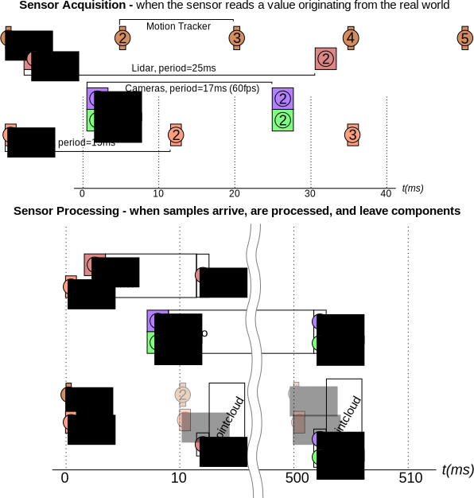
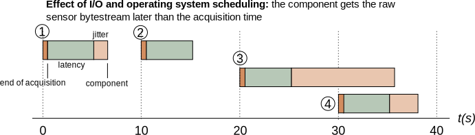
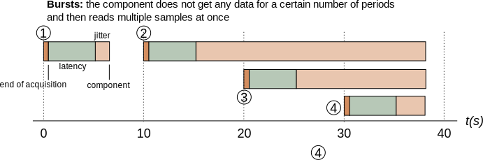

Data and Timestamps
- Timestamping
- Estimating and Improving Acquisition Timestamps
- Timestamps in Rock data types
- Filtering Latency with the Timestamp Estimator
One major design difference between component systems commonly found in the software engineering community and the ones developed by the robotics community is that, in the former, interaction between components is mostly done through messaging and protocols (synchronous or asynchronous RPC) while, in the second one, the dominant model is the one of dataflow (one-way transmission of data samples). The main reason for that difference is that the consensus in the robotics community is to see the component layer as a data processing layer, i.e. a set of mingled pipelines in which data flows and gets processed, while the software engineering community is more focussed on business processes, in which transmission of information needs to be done through two-way protocols.
In other words: in robotics, when it comes to develop components, data is king. The major implication of that, when one develops a robotic toolchain, is that both tools and components need to be designed so as to handle the issue raising with data, originating from the world and being processed in an asynchronous way but in realtime.
This has a lot of ramifications. We will deal with in this page with the one that has the most impact on writing libraries and components for the robotics world: timestamping. A related issue, the one of time-ordered data processing, will be dealt with in our presentation of the stream aligner.
Timestamping
Since robotics is all about managing physical systems that evolve in a physical environment, and modify it, the relationship between the data that are being processed and this environment is central to the problem of data processing. Key to that is the ability to associate data temporally: the ability to mark when a particular information was sensed from the physical world. This process is usually referred as timestamping.
In the following example, since the two data acquisition pipelines have (tremendously) different processing times, the point cloud generated from the stereo pair and the IMU readings that have originate from the same point in time in the real world are going to reach the pose estimator component at very different times. It is therefore important for the pose estimation component to be able to know their actual order in the real world. This is what data timestamping is meant to achieve: not mark when a particular data structure has been filled, but when the information contained in this data structure was sensed in the real world.
Moreover, at the output of the pose estimator, the generated pose should also be timestamped properly, i.e. mark the time at which the pose estimate was the pose of the robot in the real world. Most estimation algorithms do provide this information (they provide a timestamped best estimate).
It is unfortunately a not so well understood issue. Indeed, a recurrent idea is that the framework itself could timestamp data. Which it could, but only if it had a model of how information propagates through the components – something that to our knowledge none of the mainstream frameworks does.
From an abstract point of view, the main guidelines about timestamps are:
- not having a timestamp in a data stream should be the exception, not the norm
- for a data sample, the timestamp represents the time at which the data was valid in the real world. In simple processing pipelines, the timestamp of the output is usually the timestamp of the processed input. Withing data fusion, the fusion algorithm usually tell us what's the timestamp (e.g. a Kalman filter produces the best estimate for the sample received at the last update step).
- control samples are a different matter. A good timestamp would general timestamp would be the time of the feedback that was used to generate the control sample. Pipelines should propagate the timestamp. This provides a measurement of the latency of the whole loop, which is a critical aspect.
Estimating and Improving Acquisition Timestamps
Let's look at a standard data acquisition process in a robotic system. As we already stated, our goal is to estimate, as closely as possible, when the data has been acquired by the sensor. Assuming a system with four sensors: an IMU, a laser scanner and two cameras (for the purpose of explaining the timestamping process, only the IMU will be used).
Ideally, timestamping would match the sensor acquisition times:

However, timestamping the data that originates from the sensors is a task that is hindered by phenomenons in the data acquisition chain: sensor acquisition process, communication between the sensor and the CPU, operating system scheduling (when the driver process gets executed once the data arrived) and – last but not least – clock synchronization in multi-CPU (and therefore multi-robot) systems. Fortunately for us, a few of these can be estimated offline and/or online.
This estimation of the time difference between an event and when this event is measured is commonly separated between a mean latency (constant part) and a jitter (variability).

Since most sensors have a fixed acquisition period, the jitter can be filtered
out over time by estimating the average sensor period and base time. In Rock,
this is done by the aggregator::TimestampEstimator class that is
described later on this page
The average latency, however, is a different issue altogether. It originates from different sources, each of which have to be solved by different means:
Sensor the latency in the sensor acquisition process is usually documented (or can at least be informally given by the company producing this sensor). In case of sensors developed in-house, this value can be estimated.
Communication layer a rough estimate can usually be obtained by looking at the amount of data and the communication layer bandwidth.
Operating system is the weak part of the chain if one does not use a hard-realtime operating system such as Xenomai or QNX or has devices that are not compatible with that realtime operating system. However, some communication layers timestamp messages at the driver level (for instance, CAN and firewire stacks on Linux systems). For other layers, no information can be obtained directly.
Clock synchronization clock synchronization solutions like NTP are available to synchronize multiple CPUs. However, they take long to converge, especially over wireless networks (if they converge at all), making it practical only on systems that are up most of the time. Additionally to NTP, outdoors, one can use GPS as a time source. Indoors, no really good solution exist to our knowledge.
Throwing hardware at the task It became common for sensors used in robotic applications to have so-called hardware synchronization signals that announce a particular event (for instance, start of acquisition), or hardware triggers that allow to pick the point of acquisition (common on cameras). Using adapted hardware and combined with the techniques proposed above, this method allows to achieve data timestamping of the order of one milliseconds, regardless of the operating system properties. The TimestampEstimator class also accepts a separate stream of timestamps that it is using to estimate the latency. Check out the next page for details.
Timestamps in Rock data types
Timestamped data samples within Rock's base types are all defined within the
/base/samples namespace, and provide a first field called time of type
/base/Time. For historical reasons, commands are usually not timestamped. Do
add one following the same When applicable (that is, mostly all the time), the
Rock data types
Filtering Latency with the Timestamp Estimator
The TimestampEstimator class, which lies in the aggregator package, is used to remove the jitter out of a periodic time stream. Basically, once configured, one gives it a time in a time series that (1) is periodic (2) can (rarely) contain lost samples and/or bursts, and returns the best estimate for the provided time.
One design criteria for this class is that it has to be zero-latency, i.e. the timestamp estimator never delays the processing of a sample.
To use it, one first adds the aggregator package in the list of dependencies
and adds the corresponding using_library statement in the orogen file. In
addition, in order to track how the filter behaves, one should create in
addition a status port, on which estimation-related statistics are output:
The manifest.xml:
<depends package="drivers/orogen/aggregator" />
In the toplevel of the orogen file:
using_library "aggregator"
import_types_from "aggregator"
An in the task_context definitions:
output_port 'timestamp_estimator_status',
'/aggregator/TimestampEstimatorStatus'
On the C++ side, one declares an aggregator::TimestampEstimator instance
variable in the task's header (not forgetting to include
aggregator/TimestampEstimator.hpp). This object will be configured in
configureHook and reset in the startHook.
At creation time, only one parameters is required: the estimation window. The timestamp estimator continuously estimates the device period by averaging the duration between successive samples on a certain time window. For stability reasons, that time window should be chosen pretty big (~ 100 periods or more). If your device period is known to drift, you should choose a window that is at most 10% of any significant drift time (i.e. if the period changes more than 10% after 10s, the window should be at most 1s)
Additionally, it is recommended to provide the expected device period. At initialization, the estimator does not have any information about the time stream it has to estimate, which makes it initially very sensible to jitter (i.e. the estimated times will be pretty bad). Providing an expected period – which is usually available from the device type and configuration – improves the initial estimation quite a lot.
As an example, the setup of the Xsens IMU, when configured at 10Hz, would be:
mTimestamper = aggregator::TimestampEstimator(
base::Time::fromSeconds(10),
base::Time::fromMilliseconds(10));
Then, in the updateHook, one gets its best estimate with:
data = mDriver->getSample();
data.time = mTimestamper.update(data.time);
_timestamp_estimator_status.write(mTimestamper.getStatus());
Do not forget to reset the estimator in the startHook
mTimestamper.reset();
All is well and good for now … as long as no samples get lost or unexpectedly delayed. The main issue here being that delayed samples look very much – from the point of view of the estimator – like lost samples.
Let's take our IMU, and see a realistic case for latency and jitter during execution:
In this example, when the component receives sample 3, how can it know whether it is sample 3 or sample 4 ? Indeed, sample 3 is received after the expected minimum reception time of sample 4, so it could either be sample 4 early or sample 3 very late.
In case of actual bursts (i.e. when the component receives multiple samples at once), the same issue arises: since the estimator is not allowed by design to store samples.

This situation can ideally be solved by indexes provided by the sensor. Some sensors count how many samples it generated so far and provides this information inside the data stream itself. In this case, this index can be explicitly provided to the estimator (you have to be careful about wraparounds).
data.time = mTimestamper.update(
data.time, mDriver->getIndex());
Finally, if you have a mean to determine data loss other than the index, you can announce lost samples to the estimator:
mTimestamper.updateLoss();
If no external means to determine loss is available, the estimator itself has a threshold-based mechanism to choose between the lost sample case or the delayed sample case. The last parameter of the constructor provides a loss_limit number of periods:
- if a sample i+1 is received and t(i+1) - t(i) <= P*loss_limit, then the estimator will think that the sample has been delayed
- if a sample i+1 is received and t(i+1) - t(i) > P*loss_limit, then the estimator will think that one sample has been lost.
The loss threshold is provided as the third argument to the constructor. It is
recommended to define a property called sample_loss_threshold of type /int
to give some control over this option. The default value for it should be 2
(unless your device, by itself, has a bursty behaviour).
# Loss threshold for the timestamp estimator
property "sample_loss_threshold", "int", 2
This property is passed to the constructor in the configureHook:
mTimestamper = aggregator::TimestampEstimator(
base::Time::fromSeconds(10),
base::Time::fromMilliseconds(10),
_sample_loss_threshold.get());
The last bit of the puzzle is the integration of hardware-provided timestamps.
As we already explained, a lot of sensors nowadays provide hardware pulses that
announce a precise event in their data acquisition process. If such a source is
available to you, you can feed it to your component by creating a e.g.
hardware_timestamps port of type /base/Time and feed this to the estimator:
input_port "hardware_timestamps", "/base/Time"
base::Time hw_time;
while (_hardware_timestamps.read(hw_time) == RTT::NewData)
mTimestamper->updateReference(hw_time);